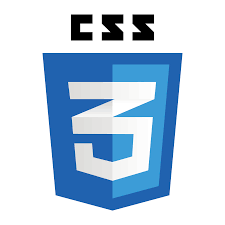

|
|
CSS3 |
 |
CSS son las siglas de Cascade Style Sheet que traducido significa hojas de estilo en cascada.
Las hojas de estilo es una tecnología que nos permite controlar la apariencia de una página web.
En un principio, los sitios web se concentraban más en su contenido que en su presentación.
HTML no pone atención en la apariencia del documento, sino en la estructura.
CSS describe como los elementos dispuestos en la página son presentados al usuario.
CSS es un gran avance que complementa el HTML y la Web en general.
Con CSS podemos especificar estilos como el tamaño, fuentes, color, espaciado entre textos y recuadros así como
el lugar donde disponer texto e imágenes en la página.
Desarrollar sitios web en formato HTML5 y CSS3, para ser visualizados en diferentes navegadores teniendo en cuenta su funcionabilidad y usabilidad, por medio del uso de diferentes editores de código propuestos en el desarrollo del curso.
#EducaciónyDesarrollo Un adelanto de lo que será nuestro programa de todos los viernes en compañía de Gloria Herrera, Directora de la Zona Occidente de la UNAD.
— Universidad UNAD (@UniversidadUNAD) November 5, 2020
Por @InstitucionalTV ✔️ pic.twitter.com/cvMzKUfNWh
Hoy inició nuestro Segundo Congreso Internacional de Ciencias Agrarias y Ambientales en el Marco de la Sostenibilidad cuyo objetivo es dialogar sobre temas referentes a sistemas de producción y mercado sostenible, conservación y aprovechamiento sostenible de la biodiversidad. pic.twitter.com/TmQUcKOg8v
— Universidad UNAD (@UniversidadUNAD) November 5, 2020